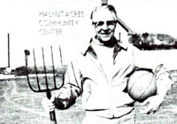
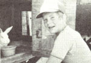
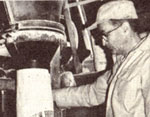

Profiles
Paul Keene, started a recreation center with a range of activities to revitalize the community; Dave Queenan, conducted a junk food experiment with rabbits; Leland Weed, making and selling flour ground in his 155 year old flour mill.
By the Mother Earth News editors
May/June 1979
In celebration of little-known MOTHER-type folks from all over.
PAUL KEENE: PORTRAIT OF A DREAMER
Paul Keene is what some folks would call a "dreamer" . . . but when Paul sets to ponderin' an idea, that notion will more than likely-soon become a reality. There was the time, for example (some 31 years back), when he was homesteading near Penns Creek, Pennsylvania and decided he'd like to grow food wholistically: Keene began a tiny homestead project ... which grew into a large-scale wholistic foods operation, dubbed "Wal nut Acres". The business soon employed some 65 local people, and Paul began to contemplate project number two.
It was evident that rural Penns Creek was fast losing its youth. The only recreation in town was a saloon ... and-as a result-young folks were beginning to answer the siren call of the city. So, Keene set to thinkin' and came up with a plan: He began by putting aside a portion of the profits from his produce sales ... and, in a few short years, there was enough of a nest egg to buy 10 acres of land in the heart of the village. Then Paul took out a $100,000 bank loan ... and began construction of the "Walnut Acres Community Center''. In November of 1976 WACC opened its doors, offering recreation to townsfolk of all alls . . . with a gymnasium, a meeting hall a theatrical stage, a library, ice-skating and roller-skating rinks, basketball and volleyball courts, and a full agenda of cultural/ recreational activities!
Most folks in Penns Creek feel that Paul has already "made a dream come true" . . . but the Keene campaign is still in its infancy. "I see WACC as a pilot project. . ." Paul explains, "an example for other communities to follow." (Two delegations from nearby towns have already come to Penns Creek to observe and learn ... so that they may begin to construct recreational facilities in their own locales.)
"The idea," Keene declares, "is to start a whole trend of rural community centers. As I see it, the only way we can possibly keep our youth 'down on the farm' is to improve the quality of their lives at home! "-Alden Stahr.
DAVE QUEENAN: JUNK-FOOD BUNNIES
Thirteen-year-old Dave Queenan listened as his science teacher announced the Middletown Freshman School's up coming science fair. The students didn't have to enter a project, said Mr. Gillil and unconvincingly ... but term grades would certainly reflect such a decision. The object-as the instructor explained it-was to [1] ask a question and [2] answer that question through experimentation. Dave wanted to do both with a minimum of time, effort, and cash ... and so he turned to his rabbitry.
Soon the young science student had picked out two healthy, male New Zealand Whites from the same litter and asked his project question: "What effect does a junk-food diet have on overall health?" And so the project began: One bunny was tagged "control", the other "experimental", and the two were officially weighed in. For three weeks the experimental" cottontail dined on cookies, presweetened cereals, marshmallows, butterscotch chips, bacon crackers, potato chips, and corn chips ... while his brother ate the usual rabbit food pellets and sweet corn.
At the end of the 21 days a size difference was clearly noticeable in both animals: The bunny fed on junk food had lost a total of 153.5 grams, while his control counterpart had gained 794 grams. Dave also noted that the experimental rabbit- previously a calm critter with thick, shiny fur-had become quite nervous ... and his coat had thinned and lost its luster. So, the sickened cottontail was switched back to his normal diet ... and soon all visible effects of poor nutrition had disappeared. (These observations support recent findings that the elimination of junk-food diets can lessen the excess mobility of hyperkinetic children ... and as suggested in studies sponsored by the Cuyahoga County, Ohio Probationary Department-may reduce criminal tendencies by slowing impulse response.)
Dave's project has been very well received everywhere it's been displayed: The exhibit won a "superior" rating the highest award attainable-at both the Eisenhower Junior High School Fair and the University of Toledo's "Toledo Science and Engineering Day". In addition, that city's Museum of Health and Natural History selected the project to be part of its two-day Science Exhibit.
Dave Queenan is rightfully pleased with the results of his experiment in nutrition. "But this is just the beginning," says the young scientist. "Next year, I'll be tackling the whys and wherefores of energy and power!- Linda Queenan.
LELAND WEED: NATURAL MILLER
"I've never used additives here at New Hope Mills," says Leland Weed. "Why, I've been waging a three-year battle in order to keep chemicals out of my flour." Leland owns a 155-year-old flour mill, run on the water power of New York State's Bear Creek, and he makes hi- flour the same way the job was done back at the turn of the century. "I dry nay grain at a considerably lower temperature (95°F) than most mills use today," says Weed. "The process at New Hope is so gentle that you could plant my grain after it's dried, and it would still grow. Grain processed at higher temperatures is killed," says Leland, "and if it is not ground immediately, it ages . . . leaving a taste that can be compared to that of two-year-old nuts! "
Weed sorts his flour differently from most mills too: "At New Hope the tailings are set aside and sold as pig feed ... whereas those from other mills often end upon your dinner table," says Leland.
"But worst of all," Weed declares, "is the amount of chemicals people today are accustomed to eating. It's getting to the point where there are hardly enough foods without additives on the market to keep us from starving.
"There's even a law in New York State now which prohibits the sale of flour without preservatives ... except cornmeal and corn products. But I've got something better than lawyers working for me in my fight against that law," says Leland. "I've got a good deal of the public behind me all the way ... 10,OWOO letters in my behalf have already been sent to Albany. "
And meanwhile ... Leland and his sons are still making flour-chemical-free as always-at New Hope Mills and selling that flour nationwide. "One thing is certain," says Leland Weed, "I'll keep additives away from my flour as long as water keeps flowing down the banks of old Bear Creek. "- Elisabeth Varak.
 PHOTO BY THE AUTHOR |
 PHOTO BY THE AUTHOR |
 PHOTO BY WILLIAM J. PHELAN |
|
 |
|
|